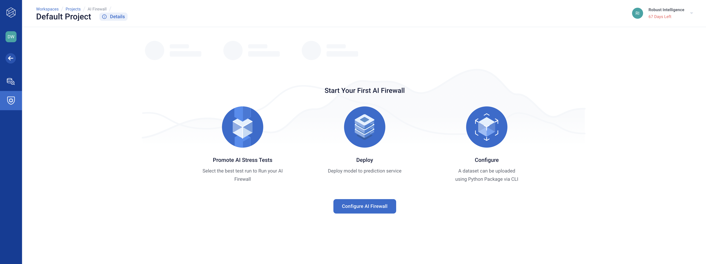
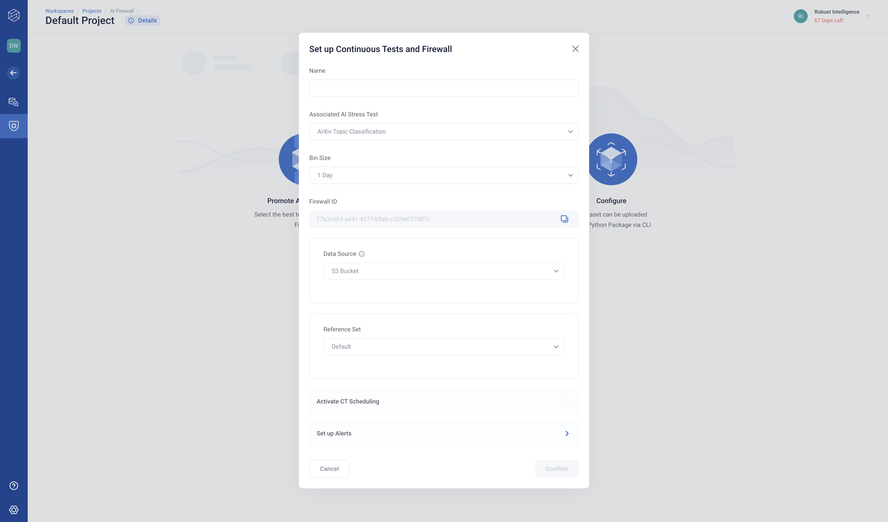

Monitoring Your Model with AI Firewall
This guide will cover how to configure the AI Firewall to continuously monitor your model in production.
We will be using a text classification model trained on a slightly modified version of the arXiv dataset, which is available in the rime_trial/ bundle provided during installation.
NLP Setup
Please ensure that the extra RIME NLP dependencies have been installed from the nlp_requirements.txt file from installation.
If you run into a ModuleNotFoundError at any point during this walkthrough, it is likely that you need to install the RIME NLP Extras!
pip install -r nlp_requirements.txt
Running AI Firewall Continuous Tests
1. Run AI Stress Testing
Kick off a Stress Testing run (the reference dataset and model from this run will be used for firewall continuous tests).
rime-engine run-nlp --config-path nlp_examples/classification/arxiv/stress_tests_config_no_model.json
2. Configure a Firewall in the Web Client
In the RI web client, click on the “Default Project” and navigate to the “AI Firewall” tab on the left . You should see the following page.
Click on “Configure AI Firewall” and fill out the details. The “Name” field can be a name of your choice. The “AI Stress Test” field should be “ArXiv Topic Classification” (this refers to the AI Stress Testing run that we just ran). Finally, the “Bin Size” field should be “1 Day”. Once you’ve filled everything out, copy the “Firewall ID” (you will need this later to upload data and predictions to monitor) and click “Done”.
3. Run Continuous Tests on Incremental Data
We can now upload data and predictions and run AI Firewall Continuous Tests. The following command uses data from June 18, 2007 to June 25, 2007.
NOTE: If you forgot to record the firewall ID in the previous step, you can find it by clicking the on the right.
rime-engine run-firewall-nlp --config-path nlp_examples/classification/arxiv/firewall_config.json --firewall-id $FIREWALL_ID
After this finishes running, you should be able to see the results in the web client, where they will be uploaded to the Default Project.
To simulate an incremental data load from the next week, simply update the configuration file (nlp_examples/classification/arxiv/firewall_config.json) to point to the next dataset:
{
"eval_path": "nlp_examples/classification/arxiv/data/val_2.json.gz",
"eval_pred_path": "nlp_examples/classification/arxiv/data/val_preds_2.jsonl.gz"
}
You can then re-run the run-firewall-nlp command to upload the next batch of data.
To upload data for the remaining 7 weeks in our examples, simply repeat this process for data files val_3.json.gz/val_3_preds.json.gz through val_9.json.gz/val_9_preds.json.gz
For additional command line options, please see the CLI Reference.
Using Your Own Model and Datasets
This guide will cover how to run AI Firewall Continuous Tests on your own model and datasets.
Collect Data in the Correct Format
Data formatting requirements are very similar to those for AI Stress Tests (see Input Data Format); however, for continuous tests, timestamp information is also needed.
For AI Firewall Continuous Tests, RI requires two datasets: a reference dataset and an (incremental) evaluation dataset. The latter must supply timestamps with each data point, using the key "timestamp". This allows the data to be sliced into batches appropriately, each of which will be compared to the reference dataset during continuous testing.
Datasets must be passed in as .json or .jsonl files, optionally compressed via gzip (creating json.gz or jsonl.gz).
Create Configuration
With your data ready, you can now create a configuration file.
For a detailed reference on what the configuration should look like, see Continuous Tests Configuration.
Run the CLI
AI Firewall Continuous Tests
You will need to have configured a firewall in the web client beforehand to get a Firewall ID. Please refer to the sections above for instructions.
Once complete, you can run the CLI like so:
rime-engine run-firewall-nlp --firewall-id $FIREWALL_ID --config-path <PATH-TO-CONFIGURATION>
After this finishes running, you should be able to see the results in the web client, where they will be uploaded to the Default Project.
For additional command line options, please see the CLI Reference.
Troubleshooting
If you run into issues, please refer to our Troubleshooting page for help! Additionally, your RI representative will be happy to assist — feel free to reach out!